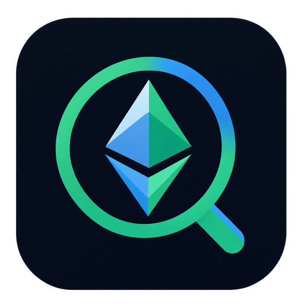
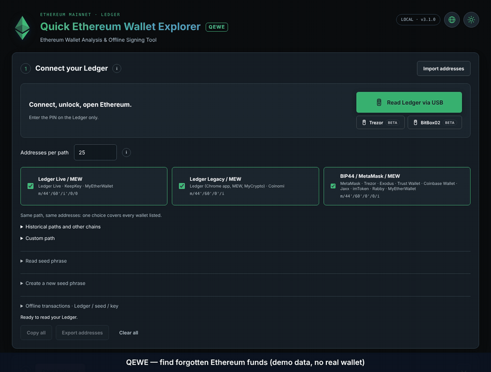

Windows
x64 · Windows 11 recommended
Download .exe No Authenticode publisher signature.
QEWEOPEN SOURCEETHEREUM · LEDGER FIRST
Quick Ethereum Wallet Explorer
Ethereum Wallet Analysis & Offline Signing Tool
Find your addresses across common wallet paths, check ETH and ERC20 balances, and review exactly what you sign.
01 / DOWNLOAD
x64 · Windows 11 recommended
Download .exe No Authenticode publisher signature.amd64 · DEB package
Download .deb Built on Ubuntu 24.04.arm64 · Apple M-series
Download .dmg Ad-hoc signed. Not notarized.x64 · Intel processor
Download .dmg Ad-hoc signed. Not notarized.Unsigned Windows preview; Mac builds are not notarized. Do not disable your system's security protections. Native builds are checked automatically, but physical wallets and every OS version have not been tested by the build environment.
02 / EXPLORER
Hardware first. Optional network services stay under your control.
Ledger Live, Legacy, BIP44/MetaMask and historical MEW paths. Start with 25 addresses per path, with configurable ranges and duplicate grouping.
ETH and 25 default ERC20s, plus custom contracts. Extra networks, prices and indexer discovery are optional. Metadata services start off.
Explicit ETH/ERC20 transfer summaries. Online signing is Ledger-only; the separate offline-file workflow also supports software keys.

Historical preview layout · simulated balances and device responses · no real wallet or hardware test shown. Current downloads include the magnifying-glass logo and revised privacy defaults.
03 / VERIFY
Trust should be inspectable.
Source, locked dependencies, full upstream notices and automated checks are public. Downloads have checksums and GitHub/Sigstore build provenance tied to a workflow and commit.
These checks establish integrity and build identity. They do not certify harmless code, independently reproducible binaries or safe handling on a compromised computer.
How to verify QEWE ↗Public source
MIT-licensed original code, preserved upstream licenses.
Native package checks
Application bytes, icons and runtime protections compared to source.
Build provenance
Verify the repository, workflow and source reference.
Honest boundaries
No independent audit; real-device validation remains outstanding.
04 / QUESTIONS
No. This is a download and documentation page. It has no wallet connection or seed-entry form. Never enter a Ledger phrase into a computer app or a support chat.
Online scans send public addresses to your selected RPC. Explicitly enabled indexer/price services receive their required public data. Providers can correlate addresses and lie about results; explorer links share an address with the site opened by your browser. This is not an anonymity tool.
Build provenance is available, but that is different from publisher code signing. Windows currently has no Authenticode signature. Mac builds are ad-hoc signed and not Apple-notarized. Review the verification guide and do not disable system-wide protections.
The explicit offline JSON workflow supports Ledger or supported software secrets. Verify destination, asset, amount, nonce and fees. For real software keys, use a trusted physically disconnected computer. The application's offline switch does not disconnect the operating system.
No. Paths, selected ranges, supported networks and services limit what can be found. Some activity can be missed. Errors are unknown results, not reliable zero balances. Indexed token/NFT discovery is optional, incomplete and unverified.
Address reading is experimental and not tested here on physical devices. They are not signing paths. Ledger is the primary hardware workflow and the only online signing device.
Use the repository's Security tab and private reporting when enabled. Do not post real keys, phrases, RPC credentials, signed transactions or personal wallet exports in issues.
Project security ↗Télécharge le paquet adapté à ton ordinateur depuis cette page ou les Releases GitHub. Ferme l’ancienne application avant l’installation. Privilégie le Ledger ou l’import d’adresses publiques ; le PIN se saisit sur le Ledger.
Ne saisis jamais la phrase de ton Ledger dans l’ordinateur. Pour signer avec une vraie clé logicielle, déconnecte physiquement le réseau. Les RPC voient les adresses consultées et peuvent les relier. Cette préversion n’a pas d’audit indépendant et les tests matériels restent à réaliser.
Lire le guide français ↗05 / SUPPORT
No subscription, hidden fee or automatic donation. If you want to support the project, this is its public Ethereum-mainnet address. Verify it against the official repository before sending.
0x1B8147Eb5b45Cf7a9569EF23bd8ca42b63867B50Blockchain transfers are public. Donating may link addresses and activity.